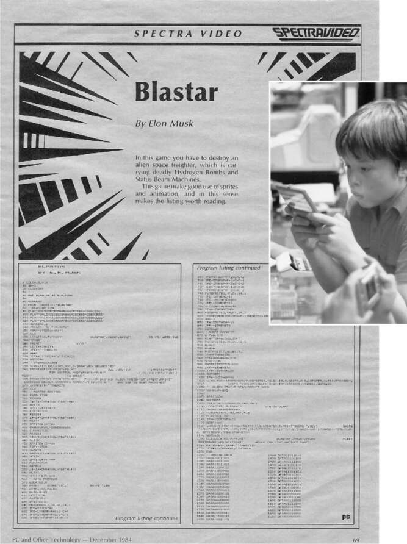

Khủng hoảng hiện sinh
Hồi nhỏ, mẹ Elon bắt đầu đưa cậu đến trường Chúa nhật tại nhà thờ Anh giáo địa phương, nơi bà là giáo viên. Mọi chuyện không suôn sẻ. Bà kể cho lớp học những câu chuyện trong Kinh thánh, và cậu liên tục đặt câu hỏi. "Ý mẹ là nước biển tách ra à?" cậu hỏi. "Điều đó không thể xảy ra." Khi bà kể câu chuyện Chúa Giê-su cho đám đông ăn bằng bánh mì và cá, cậu phản bác rằng mọi thứ không thể tự nhiên xuất hiện từ hư không. Sau khi được rửa tội, cậu được mong đợi sẽ tham gia rước lễ, nhưng cậu cũng bắt đầu đặt câu hỏi về điều đó. "Tôi đã nhận lấy máu và thân thể của Chúa, điều này thật kỳ lạ đối với một đứa trẻ," cậu nói. "Tôi đã hỏi, 'Cái quái gì đây? Đây có phải là một phép ẩn dụ kỳ lạ cho tục ăn thịt người không?'" Maye quyết định để Elon ở nhà đọc sách vào các buổi sáng Chủ nhật.
Cha cậu, một người sùng đạo hơn, nói với Elon rằng có những điều không thể biết được thông qua giác quan và trí óc hạn hẹp của chúng ta. "Không có phi công nào là người vô thần," ông thường nói, và Elon sẽ nói thêm, "Không có người vô thần nào vào giờ thi cả." Nhưng Elon đã sớm tin rằng khoa học có thể giải thích mọi thứ và do đó không cần phải tưởng tượng ra một Đấng Tạo Hóa hay một vị thần sẽ can thiệp vào cuộc sống của chúng ta.
Bước vào tuổi thiếu niên, cậu cảm thấy thiếu vắng điều gì đó. Cậu nhận thấy cả khoa học lẫn tôn giáo đều không giải đáp được những câu hỏi lớn như vũ trụ từ đâu đến và tại sao nó tồn tại. Vật lý có thể giải thích mọi thứ về vũ trụ, trừ lý do tồn tại của nó. Điều này dẫn đến khủng hoảng hiện sinh thời niên thiếu của cậu. "Tôi bắt đầu tìm kiếm ý nghĩa của cuộc sống và vũ trụ," cậu nói. "Và tôi thực sự chán nản, cảm giác như cuộc sống có thể chẳng có ý nghĩa gì."
Như một mọt sách thực thụ, cậu tìm kiếm câu trả lời qua sách vở. Ban đầu, cậu mắc sai lầm điển hình của tuổi mới lớn khi tìm đến các triết gia hiện sinh như Nietzsche, Heidegger và Schopenhauer. Điều này chỉ khiến cậu thêm tuyệt vọng. "Tôi không khuyến khích đọc Nietzsche khi còn là thiếu niên," cậu chia sẻ.
May mắn thay, cậu tìm thấy niềm an ủi trong khoa học viễn tưởng, nguồn cảm hứng bất tận cho những đứa trẻ ham học hỏi. Cậu đọc ngấu nghiến toàn bộ sách khoa học viễn tưởng ở thư viện trường và thư viện địa phương, rồi còn yêu cầu thủ thư đặt thêm sách.
Một trong những cuốn sách yêu thích của cậu là The Moon Is a Harsh Mistress của Robert Heinlein, một tiểu thuyết về một trại giam trên mặt trăng. Trại giam này được quản lý bởi một siêu máy tính có tên Mike, có khả năng tự nhận thức và khiếu hài hước. Máy tính đã hy sinh trong một cuộc nổi loạn tại trại giam. Cuốn sách này khai thác một vấn đề trọng tâm trong cuộc đời cậu: Liệu trí tuệ nhân tạo sẽ phát triển theo hướng có lợi và bảo vệ nhân loại, hay máy móc sẽ phát triển ý định riêng và trở thành mối đe dọa?
Chủ đề này cũng là trọng tâm của một tác phẩm yêu thích khác của cậu, đó là những câu chuyện về robot của Isaac Asimov. Những câu chuyện này đặt ra các quy luật robot nhằm đảm bảo chúng không vượt khỏi tầm kiểm soát. Trong cảnh cuối của cuốn tiểu thuyết Robots and Empire năm 1985, Asimov đã trình bày quy luật cơ bản nhất, được gọi là Định luật Zero: "Robot không được làm hại loài người, hoặc, bằng cách không hành động, cho phép loài người bị hại." Các anh hùng trong loạt sách Foundation của Asimov đã phát triển một kế hoạch đưa những người định cư đến các vùng xa xôi của thiên hà để bảo tồn ý thức loài người trước thời kỳ đen tối sắp xảy ra.
Hơn ba mươi năm sau, cậu đăng một dòng tweet ngẫu hứng về việc những ý tưởng này đã thúc đẩy cậu biến con người thành loài du hành vũ trụ và khai thác trí tuệ nhân tạo để phục vụ nhân loại như thế nào: "Foundation Series & Định luật Zero là nền tảng cho sự ra đời của SpaceX."
Cuốn sách khoa học viễn tưởng ảnh hưởng nhất đến những năm tháng tuổi trẻ của cậu là The Hitchhiker’s Guide to the Galaxy của Douglas Adams. Câu chuyện dí dỏm và hài hước đã góp phần định hình triết lý sống của cậu và thêm một chút hài hước vào vẻ ngoài nghiêm nghị. "The Hitchhiker’s Guide," cậu nói, "đã giúp tôi thoát khỏi cơn trầm cảm hiện sinh, và tôi sớm nhận ra nó hài hước một cách tinh tế."
Câu chuyện kể về Arthur Dent, một người Trái Đất được cứu bởi một con tàu vũ trụ ngay trước khi hành tinh bị phá hủy bởi một nền văn minh ngoài hành tinh đang xây dựng đường cao tốc không gian. Cùng với người cứu hộ ngoài hành tinh, Dent khám phá khắp thiên hà, nơi được điều hành bởi một vị tổng thống hai đầu, người đã “biến sự khó hiểu thành nghệ thuật”. Cư dân của thiên hà đang cố gắng tìm ra “Câu trả lời cho Câu hỏi Cuối cùng về Sự sống, Vũ trụ và Vạn vật”. Họ chế tạo một siêu máy tính và sau bảy triệu năm, nó đưa ra câu trả lời: 42. Khi điều đó gây ra sự hoang mang, máy tính trả lời: “Đó chắc chắn là câu trả lời. Thành thật mà nói, tôi nghĩ vấn đề là bạn chưa bao giờ thực sự biết câu hỏi là gì”. Bài học đó đã in sâu vào tâm trí Musk. “Tôi rút ra từ cuốn sách rằng chúng ta cần mở rộng phạm vi nhận thức để có thể đặt ra những câu hỏi về câu trả lời, chính là vũ trụ”, ông nói.
Cuốn sách “The Hitchhiker’s Guide to the Galaxy”, kết hợp với việc Musk sau này đắm chìm vào các trò chơi mô phỏng video và trên bàn, đã dẫn đến niềm đam mê suốt đời với ý nghĩ trêu ngươi rằng chúng ta có thể chỉ là những con tốt trong một mô phỏng do một sinh vật cấp cao nào đó tạo ra. Như Douglas Adams đã viết, “Có một lý thuyết cho rằng nếu bất kỳ ai khám phá ra chính xác Vũ trụ là gì và tại sao nó tồn tại, thì nó sẽ ngay lập tức biến mất và được thay thế bằng một thứ gì đó thậm chí còn kỳ lạ và khó hiểu hơn. Có một lý thuyết khác cho rằng điều này đã xảy ra rồi”.
Cuối những năm 1970, trò chơi nhập vai Dungeons & Dragons trở thành một cơn sốt phổ biến trong cộng đồng những người đam mê công nghệ toàn cầu. Elon, Kimbal và những người anh em họ nhà Rive đã đắm mình vào trò chơi, cùng nhau ngồi quanh bàn, dựa vào bảng nhân vật và xúc xắc để bắt đầu những cuộc phiêu lưu kỳ ảo. Một trong những người chơi đóng vai trò là Dungeon Master, người điều khiển trò chơi.
Elon thường đảm nhận vai trò Dungeon Master và thật bất ngờ, anh đã làm điều đó một cách nhẹ nhàng. “Ngay cả khi còn nhỏ, Elon đã có rất nhiều kiểu cách và tâm trạng khác nhau”, anh họ Peter Rive nói. “Là một Dungeon Master, cậu ấy vô cùng kiên nhẫn, điều mà theo kinh nghiệm của tôi, không phải lúc nào cũng là tính cách mặc định của cậu ấy, nếu bạn hiểu ý tôi. Điều đó đôi khi xảy ra, và thật tuyệt vời khi nó diễn ra”. Thay vì gây áp lực cho em trai và anh em họ, anh ấy sẽ phân tích rất kỹ lưỡng để mô tả các lựa chọn mà họ có trong từng tình huống.
Họ cùng nhau tham gia một giải đấu ở Johannesburg, nơi họ là những người chơi trẻ nhất. Dungeon Master của giải đấu đã giao nhiệm vụ cho họ: các bạn phải cứu người phụ nữ này bằng cách tìm ra ai là kẻ xấu trong trò chơi và tiêu diệt hắn. Elon nhìn Dungeon Master và nói: “Tôi nghĩ anh là kẻ xấu”. Và vì vậy, họ đã tiêu diệt anh ta. Elon đã đúng, và trò chơi, lẽ ra phải kéo dài vài giờ, đã kết thúc. Ban tổ chức đã cáo buộc họ gian lận bằng cách nào đó và ban đầu cố gắng từ chối trao giải thưởng cho họ. Nhưng Musk đã thắng. “Những người này thật ngốc”, anh nói. “Điều đó quá rõ ràng”.
Lần đầu tiên Musk nhìn thấy máy tính là vào khoảng 11 tuổi. Khi đó, cậu đang ở một trung tâm thương mại tại Johannesburg và đứng lặng người nhìn nó hàng phút liền. "Tôi đã đọc các tạp chí máy tính," cậu nói, "nhưng chưa bao giờ thực sự thấy một chiếc máy tính ngoài đời." Giống như với chiếc xe máy, cậu nài nỉ cha mua cho mình một cái. Errol lại kỳ lạ thay rất ghét máy tính, cho rằng chúng chỉ tốt cho việc chơi game tốn thời gian chứ không phải cho kỹ thuật. Vậy nên Elon đã tiết kiệm tiền từ những công việc lặt vặt và mua một chiếc Commodore VIC-20, một trong những máy tính cá nhân đời đầu. Nó có thể chơi các trò chơi như Galaxian và Alpha Blaster, trong đó người chơi cố gắng bảo vệ Trái đất khỏi những kẻ xâm lược ngoài hành tinh.
Chiếc máy tính đi kèm với một khóa học lập trình BASIC kéo dài 60 giờ. "Tôi đã hoàn thành nó trong ba ngày, gần như không ngủ," cậu nhớ lại. Vài tháng sau, cậu xé một mẩu quảng cáo về hội nghị máy tính cá nhân tại một trường đại học và nói với cha rằng cậu muốn tham dự. Một lần nữa, cha cậu lại từ chối. Đó là một hội thảo đắt tiền, khoảng 400 đô la, và không dành cho trẻ em. Elon đáp rằng nó "rất cần thiết" và cứ đứng cạnh cha mình nhìn chằm chằm. Trong vài ngày tiếp theo, Elon liên tục lấy mẩu quảng cáo ra khỏi túi và nhắc lại yêu cầu của mình. Cuối cùng, cha cậu đã thuyết phục được trường đại học giảm giá cho Elon để cậu được đứng phía sau dự thính. Khi Errol đến đón cậu vào cuối buổi, ông thấy Elon đang trò chuyện với ba giáo sư. "Cậu bé này phải có một máy tính mới," một trong số họ tuyên bố.
Sau khi đạt điểm cao trong bài kiểm tra kỹ năng lập trình ở trường, cậu đã có một chiếc IBM PC/XT và tự học lập trình bằng Pascal và Turbo C++. Năm 13 tuổi, cậu đã tạo ra một trò chơi điện tử, đặt tên là Blastar, sử dụng 123 dòng lệnh BASIC và một số ngôn ngữ assembly đơn giản để tạo đồ họa. Cậu gửi nó đến tạp chí PC and Office Technology, và nó đã xuất hiện trên ấn bản tháng 12 năm 1984 với một đoạn giới thiệu ngắn gọn giải thích, "Trong trò chơi này, bạn phải tiêu diệt một tàu chở hàng không gian của người ngoài hành tinh, mang theo những quả bom hydro chết người và Máy phát Tia Trạng thái." Mặc dù không rõ Máy phát Tia Trạng thái là gì, nhưng nghe có vẻ thú vị. Tạp chí đã trả cho cậu 500 đô la, và cậu tiếp tục bán cho họ hai trò chơi khác, một trò chơi giống Donkey Kong và trò chơi còn lại mô phỏng roulette và blackjack.
Từ đó bắt đầu một niềm đam mê suốt đời với trò chơi điện tử. "Nếu bạn chơi với Elon, bạn sẽ chơi liên tục cho đến khi phải ăn," Peter Rive nói. Trong một chuyến đi đến Durban, Elon đã tìm ra cách hack các trò chơi trong một trung tâm thương mại. Cậu đã có thể can thiệp vào hệ thống để họ có thể chơi hàng giờ mà không cần dùng xu.
Sau đó, cậu nảy ra một ý tưởng lớn hơn: hai anh em họ có thể tạo ra một khu trò chơi điện tử của riêng mình. "Chúng tôi biết chính xác những trò chơi nào phổ biến nhất, vì vậy nó có vẻ như là một điều chắc chắn," Elon nói. Cậu đã tìm ra cách dòng tiền có thể tài trợ cho các máy móc. Nhưng khi các chàng trai cố gắng xin giấy phép thành phố, họ được thông báo rằng cần có người trên 18 tuổi ký vào đơn. Kimbal, người đã điền vào ba mươi trang mẫu đơn, quyết định rằng họ không thể nhờ Errol. "Ông ấy là một người quá khó khăn," Kimbal nói. "Vì vậy, chúng tôi đã đến gặp bố của Russ và Pete, và ông ấy đã nổi giận. Điều đó cơ bản đã chấm dứt mọi thứ."

/